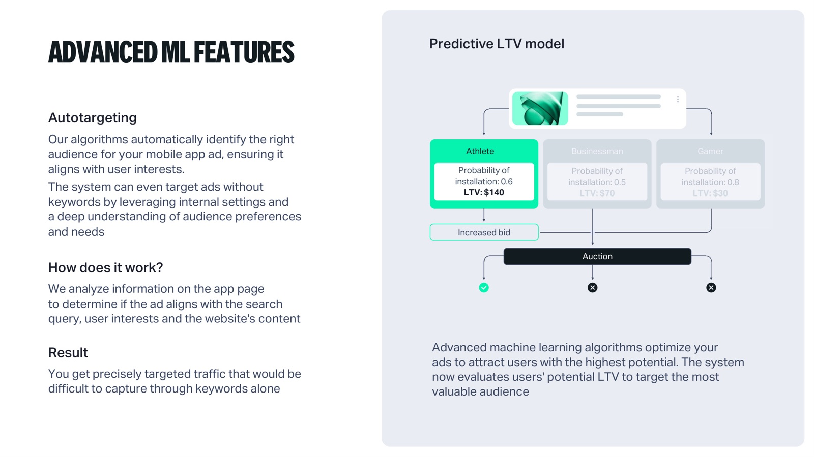
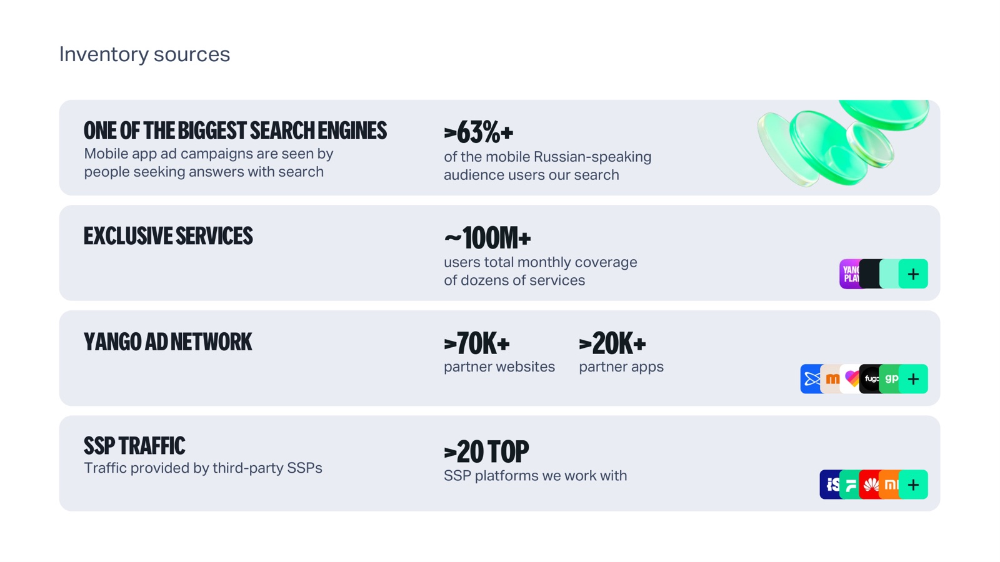

Инсайт об аудитории
У компании уже может быть спрос со стороны русскоязычных пользователей, но он не учитывается в стратегии привлечения.
Как я определила сегмент для Yango Ads App Campaigns, сформулировала позиционирование и подготовила LinkedIn-сообщения для компаний Европы и Америки.
новая точка
роста
Нашла релевантный сегмент для контакта, сформулировала гипотезу и собрала под неё скрипты LinkedIn-сообщений.
Заинтересовать компании Европы и Америки тестом Yango Ads App Campaigns, не конкурируя напрямую с их существующим набором рекламных каналов.
Найти компании, для которых предложение действительно релевантно.
Объяснить, почему я пишу именно этой компании.
Перевести сложный рекламный продукт в короткое убедительное сообщение.
Я не строила коммуникацию только на формальных характеристиках продукта. Для первого сообщения нужен был конкретный сигнал: уже существующая русскоязычная аудитория. Приоритет получили роли, отвечающие за рост и привлечение пользователей.
Вместо обещания заменить Meta и Google я предложила проверить дополнительный охват через аудиторию и инвентарь Yango Ads.
У компании уже может быть спрос со стороны русскоязычных пользователей, но он не учитывается в стратегии привлечения.
Yango Ads даёт дополнительный охват через собственную экосистему, поиск и партнёрский инвентарь.
Локальная продуктовая экспертиза помогает быстрее запустить и оценить тест.
Я не пыталась продать продукт в первом сообщении. Сначала объясняла, почему пишу именно этой компании, затем показывала потенциальную возможность и только после этого проверяла наличие задачи.
КонтекстПочему я обращаюсь именно к этой компании
ЦенностьКакая возможность для роста может быть релевантна
ДиалогЕсть ли эта задача в планах компании
Версия для компаний, у которых уже может быть спрос со стороны русскоязычных пользователей.
Yango AdsLinkedIn message · 1
Yango AdsLinkedIn message · 2
Yango AdsLinkedIn message · 3
Версия для продуктов, которым нужны новые рынки привлечения и альтернативные источники трафика.
Yango AdsLinkedIn message · 1
Yango AdsLinkedIn message · 2
Yango AdsLinkedIn message · 3
Yango AdsLinkedIn message · 4
Я работала с продуктовой презентацией об аудитории, инвентаре, ML-моделях, привлечении и ретаргетинге, форматах и подключении. Моя задача — отобрать из этого материала аргументы, которые заинтересуют лида и помогут начать предметный разговор.
Посмотреть исходную презентацию ↗Yango App Campaigns · Q3 2025

Аудитория и сегментацияОпределила сегмент, роли и критерии релевантности.
ПозиционированиеСформулировала гипотезу роста и иерархию ключевых сообщений.
КонтентСобрала последовательности LinkedIn-сообщений для разных сигналов.
Продуктовые аргументыОтобрала из презентации аргументы для первого контакта.
Дизайн тестаОпределила метрики первого запуска и логику оценки результата.
Три задачи для Яндекс Директа: продуктовый запуск, активационное предложение и обязательная сервисная коммуникация.
Объяснила клиентам из Европы, какие новые рынки можно добавить и как включить возможность в существующих кампаниях.
Объяснить изменение продукта без перегруза деталями и сразу показать сценарий применения.
Упаковала предложение для клиентов с расходами от $4,000 в месяц: производство видео под бренд и задачи кампании.
Превратить бесплатное производство креативов из бонуса в понятный сценарий роста эффективности.
Использовали повышение НДС как инфоповод, чтобы простимулировать использование рекламных бюджетов до вступления новой ставки в силу. В том же письме объяснили, как изменение повлияет на баланс и кампании.
Показать, что изменилось, что произойдёт с балансом и что нужно сделать, чтобы реклама не остановилась.